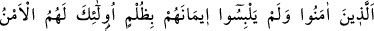
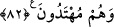
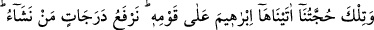
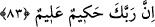

putlardan, hiç bir zararı ve faydası dokunmayan cansız varlıklardan nasıl çekinirim?
Buradaki soru, böyle bir şeyin olmasını reddetmek ve tamamen inkar etmek içindir.
Siz, korkulmaya en lâyık olan şanı yüce Allah’dan korkmadığınız halde ben
korkulması gereken şeyler olduklarına inanmadığım cansız putlardan nasıl korkarım?
Halbuki siz en büyük ve en korkunç felâketten korkmuyorsunuz. O da, yerde ve gökte
benzeri olmayan Allah’a, (bk. eş-Şûrâ, 42/11) yarattığı bazı şeyleri ortak koşmanızdır.
Putların ortak koşulması hakkında bir delil indirilmediğinin beyan edilmesi, dinî
emirlerin ancak Allah katından indirilen bir delil ile sabit olacağının bildirilmesinin
yanında onlarla alay etmek içindir.
“Şimdi biliyorsanız” haydi söyleyin “iki topluluktan hangisi güvende olmaya daha
lâyıktır?” Tek Allah’a inanan bizler mi haklıyız, yoksa Allah’a ortak koşan sizler mi
haklısınız?
Ebüssuud Efendi der ki: “Buradaki “iki fırka” dan maksat, hakikaten emin olunacak
mahalde bulunup da emniyette olanlar ile esasen korkulacak bir mahalde bulunduğu
halde kendilerini emniyette zannedenlerdir.”
82. İnanıp da îmanlarına herhangi bir haksızlık bulaştırmayanlar var ya, işte
güven onlarındır ve onlar doğru yolu bulanlardır.
O îman edenler ki; onlar bundan önceki âyet-i celilede bahsedilen iki fırkadır.
Onlardan “inananlar ve îmanlarını bir haksızlıkla karıştırmayanlar.” Yani
müşriklerin yaptıkları gibi îmanlarını şirkle karıştırmayanlar, demektir.
Müşrikler kendilerinin de Allah’a inandıklarını, ancak putlara tapınmanın îmanlarını
tamamladığını, putların kendilerini Allah’a yaklaştırdığını ve O’nun katında kendilerine
şefaatçı olduklarını iddiâ ediyorlardı. Nitekim onlar, şöyle demişlerdir: “Biz bunlara,
sırf bizi Allah’a yaklaştırsınlar diye tapıyoruz.” (ez-Zümer, 39/3) İşte, îmana
haksızlık, zulüm karıştırmanın mânâsı budur.
“İşte,” azabdan “güven” yalnız “onlarındır ve doğru yolu bulanlar da onlardır.”
Hakikata ulaşanlar yalnız onlardır. Diğerleri apaçık sapkınlık içindedirler.
83. İşte bu, kavmine karşı İbrahim’e verdiğimiz delillerimizdir. Biz dilediğimiz